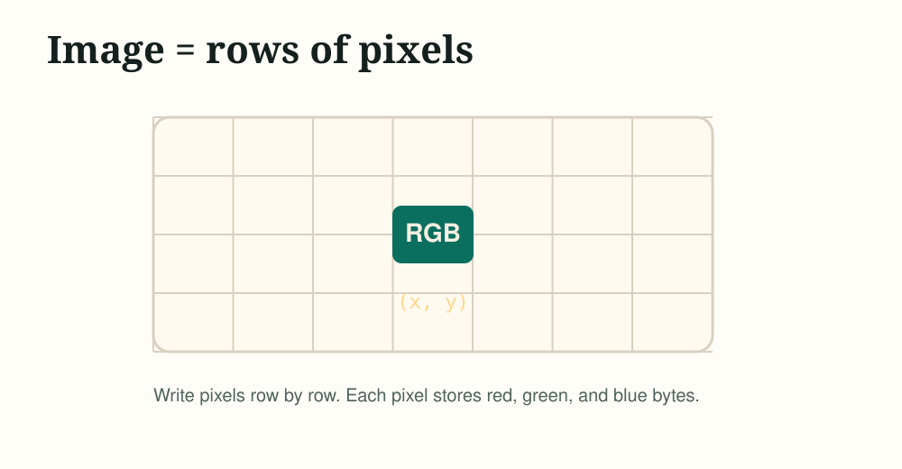
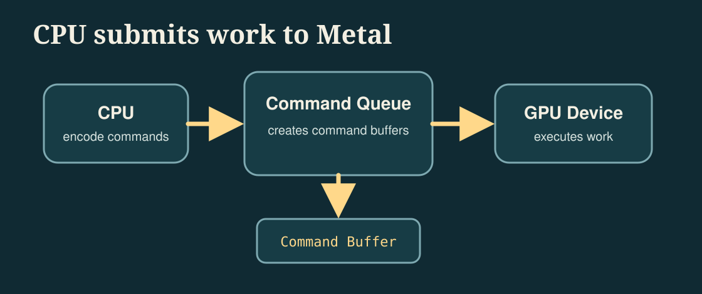
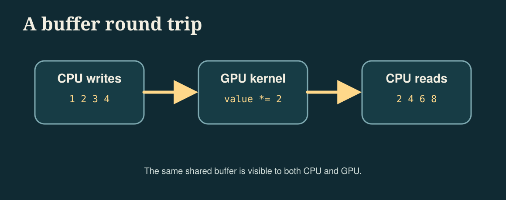
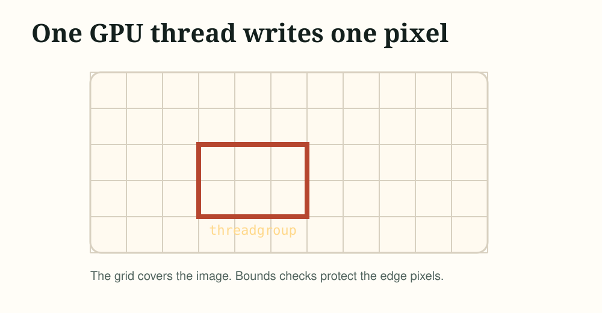
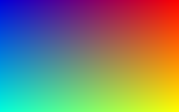
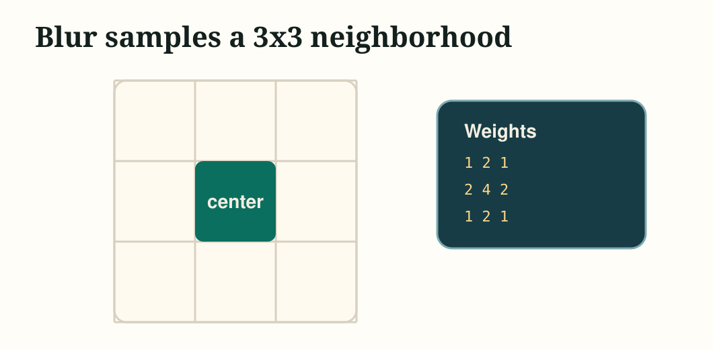

Metal-cpp in One Weekend
Version 0.1, 2026-05-02
Overview
This book uses metal-cpp to write the first GPU program. We don't start by drawing triangles. The triangle looks simple, but it introduces a window, drawables, render passes, render pipelines, vertex shaders, fragment shaders, and coordinate systems all at once. For readers new to Metal, these concepts will be introduced all at once.
Let's start with image processing. The input and output of image processing are very specific: one piece of pixel data goes in, another piece of pixel data comes out. In this way, you can first understand Metal's core models: Device, Command Queue, Command Buffer, Buffer, a compute shader and Compute Pipeline State.
The style of this book is to modify the program step by step. Each chapter will give the key code and necessary changes, and explain what is added in this step after the code; the complete final source code is placed in src/MetalCppInOneWeekend/ for comparison. You should try to type this code by hand as much as possible; making mistakes and then correcting them is a very effective part of learning graphics and GPU programming.
This book uses C++17. The implementation macro for metal-cpp must be defined only once in a .cpp file:
#define NS_PRIVATE_IMPLEMENTATION#define CA_PRIVATE_IMPLEMENTATION#define MTL_PRIVATE_IMPLEMENTATIONBook 1 does not create windows, so all examples can remain as plain C++. The last two books also continue to maintain off-screen output: Book 2 uses a render pipeline to generate static rendered images, and Book 3 uses compute workload for performance experiments.
This tutorial uses CMake to manage reference code. You don't need to understand complex project structures first; Book 1 only requires three files: CMakeLists.txt, main.cpp, Shaders.metal. The tutorial text will first write the code step by step according to the concept, and the final reference code location and run results will be given at the end of the book.
add_executable(MetalCppInOneWeekend main.cpp)If a .metal shader is added later, CMake has to do one more step: call Apple's metal and metallib tools to generate default.metallib and pass the path to C++.
Output an Image
The PPM Image Format
Any graphics program needs to see results first. The easiest way is not to use a window, but to write an image file.
PPM is a very simple image format. It can be represented in plain text or binary. We first use binary P6. The file header looks like this:
P6256 160255The first line P6 represents binary RGB. The second line is width and height. The third line is the maximum value of each color channel. Followed by width * height RGB pixels.
Below is the first complete program. It doesn't use Metal, it just confirms that we can generate an image.
#include <cstdint>#include <filesystem>#include <fstream>#include <iostream>int main(){ constexpr int width = 256; constexpr int height = 160; std::filesystem::create_directories("build"); std::ofstream out("build/gradient.ppm", std::ios::binary); out << "P6\n" << width << " " << height << "\n255\n"; for (int y = 0; y < height; ++y) { for (int x = 0; x < width; ++x) { const uint8_t rgb[3] = { static_cast<uint8_t>(x), static_cast<uint8_t>(y * 255 / (height - 1)), static_cast<uint8_t>(180), }; out.write(reinterpret_cast<const char*>(rgb), sizeof(rgb)); } } std::cout << "Wrote build/gradient.ppm\n"; return 0;}After running this, open build/gradient.ppm and you should see an image with a horizontal red gradient, vertical green gradient, and a fixed blue component.
There is no Metal shaders at this stage, so the CMake target only requires main.cpp:
add_executable(MetalCppInOneWeekend main.cpp)
There are several key points in this code:
- Pixels are written out row by row.
- Each line is written from left to right.
- Lines are written from top to bottom.
- Each pixel has three bytes: red, green, blue.
- The color in the file is an integer
0..255, but in the shader we often use0.0..1.0to think about color first.
So far we haven't used the GPU. The next step is to hand over calculations to Metal.
A Metal Device
Creating the Device
Device is one of the most important objects in Metal. You can think of it as the entrance to the current GPU. Almost all GPU resources are created from Device, including Buffer, Texture and pipeline.
A minimal Metal program only needs to create a Device:
#define NS_PRIVATE_IMPLEMENTATION#define CA_PRIVATE_IMPLEMENTATION#define MTL_PRIVATE_IMPLEMENTATION#include <Foundation/Foundation.hpp>#include <QuartzCore/QuartzCore.hpp>#include <Metal/Metal.hpp>#include <iostream>int main(){ NS::AutoreleasePool* pool = NS::AutoreleasePool::alloc()->init(); MTL::Device* device = MTL::CreateSystemDefaultDevice(); if (!device) { std::cerr << "Metal is not available on this Mac.\n"; pool->release(); return 1; } std::cout << "Device: " << device->name()->utf8String() << "\n"; device->release(); pool->release(); return 0;}This chapter begins to rely on the metal-cpp header file and Apple frameworks, so CMake needs to add include path and framework links:
target_include_directories(MetalCppInOneWeekend PRIVATE "${METAL_CPP_ROOT}")target_link_libraries(MetalCppInOneWeekend PRIVATE "-framework Foundation" "-framework QuartzCore" "-framework Metal")Compared with the previous chapter, this step adds three new things:
- Define three implementation macros of
metal-cpp. - Create
NS::AutoreleasePool. - Call
MTL::CreateSystemDefaultDevice()to get the default GPU.
metal-cpp is a C++ wrapper for the Objective-C Metal API, so you will still see Cocoa-style lifecycle operations such as alloc() and release(). Here we first use release() manually, and the same rule will be maintained every time we add a new resource: whoever creates it will release it before the end of the program.
Adding a Command Queue
Only Device cannot submit work yet. The CPU needs to create Command Buffer through Command Queue and then give the command to the GPU.
Add the following lines after Device is successfully created:
MTL::CommandQueue* queue = device->newCommandQueue();if (!queue){ std::cerr << "Could not create a command queue.\n"; device->release(); pool->release(); return 1;}std::cout << "Command Queue: " << queue << "\n";Release it before the program ends:
queue->release();device->release();pool->release();
Now we have the entry point for the CPU to submit work to the GPU, but there is no code that the GPU can execute. The first a compute shader will be added in the next chapter.
A Buffer Round Trip
Round-Trip Goal
First let the GPU change a small set of numbers. CPU prepares the array:
1 2 3 4The GPU multiplies each number by 2, and the CPU reads it back:
2 4 6 8This example is small, but it contains the full Metal compute path:
- Create
Buffer - Load
.metalshader - Create
Compute Pipeline State - Create
Command Buffer - Encoding compute commands
- Submit and wait for completion
- Read results back from shared buffer

The Shader
Create new Shaders.metal:
#include <metal_stdlib>using namespace metal;kernel void double_values(device uint* values [[buffer(0)]], uint id [[thread_position_in_grid]]){ values[id] *= 2;}After adding the shader, CMake needs to declare METALLIB_PATH and add the command to generate default.metallib from Shaders.metal:
set(METALLIB "${CMAKE_BINARY_DIR}/default.metallib")target_compile_definitions(MetalCppInOneWeekend PRIVATE METALLIB_PATH="${METALLIB}")add_custom_command( OUTPUT "${METALLIB}" COMMAND "${CMAKE_COMMAND}" -E make_directory "${CMAKE_BINARY_DIR}/ModuleCache" COMMAND xcrun -sdk macosx metal "-fmodules-cache-path=${CMAKE_BINARY_DIR}/ModuleCache" -c Shaders.metal -o "${CMAKE_BINARY_DIR}/Shaders.air" COMMAND xcrun -sdk macosx metallib "${CMAKE_BINARY_DIR}/Shaders.air" -o "${METALLIB}" DEPENDS Shaders.metal)This will perform two steps in the build directory: first use xcrun -sdk macosx metal to compile .metal into .air, and then use xcrun -sdk macosx metallib to generate default.metallib.
kernel indicates that this is the compute shader entry. values [[buffer(0)]] represents buffer slot 0. thread_position_in_grid gives the index of the current thread. We will dispatch 4 threads, so id will be 0, 1, 2, 3.
Loading the Shader
The main program needs to load the function from .metallib and then create the pipeline:
NS::String* makeString(const char* value){ return NS::String::string(value, NS::UTF8StringEncoding);}MTL::ComputePipelineState* makePipeline(MTL::Device* device, const char* functionName){ NS::Error* error = nullptr; MTL::Library* library = device->newLibrary(makeString(METALLIB_PATH), &error); if (!library) { std::cerr << "Could not load metallib.\n"; return nullptr; } MTL::Function* function = library->newFunction(makeString(functionName)); MTL::ComputePipelineState* pipeline = device->newComputePipelineState(function, &error); function->release(); library->release(); return pipeline;}The new concept added in this step is Compute Pipeline State. Metal does not temporarily interpret shaders on each dispatch. You first compile the shader function into pipeline state, and then bind this state when coding commands.
Encoding Work
Below is the complete calculation and submission section:
std::array<uint32_t, 4> input = {1, 2, 3, 4};MTL::Buffer* buffer = device->newBuffer( input.data(), input.size() * sizeof(uint32_t), MTL::ResourceStorageModeShared);MTL::CommandBuffer* commandBuffer = queue->commandBuffer();MTL::ComputeCommandEncoder* encoder = commandBuffer->computeCommandEncoder();encoder->setComputePipelineState(pipeline);encoder->setBuffer(buffer, 0, 0);encoder->dispatchThreads( MTL::Size::Make(input.size(), 1, 1), MTL::Size::Make(input.size(), 1, 1));encoder->endEncoding();commandBuffer->commit();commandBuffer->waitUntilCompleted();auto* output = static_cast<uint32_t*>(buffer->contents());std::cout << output[0] << " " << output[1] << " " << output[2] << " " << output[3] << "\n";The most confusing thing here is setBuffer(buffer, 0, 0). The first 0 is the buffer offset, and the second 0 is [[buffer(0)]] in the shader. In other words, we bind buffer in C++ to the 0th buffer parameter of the shader.
The first size in dispatchThreads is the total number of threads, and the second size is the number of threads in each threadgroup. This example only has 4 elements, so we directly wrap 4 threads with a threadgroup.
First Compute Image
Moving From Numbers to Pixels
In the previous chapter, 4 integers were changed using the GPU. Now use the same idea to have the GPU to write an image.
We still use Buffer first because it is easier to see the memory layout than Texture. Each pixel is stored using four bytes:
red, green, blue, alphaIn C++, it is uchar4 or four uint8_t.
The Gradient Kernel
The new shader generates colors based on the two-dimensional coordinates of the current thread:
#include <metal_stdlib>using namespace metal;kernel void make_gradient(device uchar4* pixels [[buffer(0)]], constant uint2& size [[buffer(1)]], uint2 id [[thread_position_in_grid]]){ if (id.x >= size.x || id.y >= size.y) { return; } const uint index = id.y * size.x + id.x; pixels[index] = uchar4(uchar(id.x * 255 / max(size.x - 1, 1u)), uchar(id.y * 255 / max(size.y - 1, 1u)), uchar(180), uchar(255));}Compared with double_values, three things have been modified here:
- The thread id changes from
uinttouint2because the picture has x and y. - There is an additional
sizebuffer, which is used to tell the shader the width and height of the image. - One-dimensional array subscripts are calculated using
id.y * size.x + id.x.
Dispatching a 2D Grid
The C++ side also needs to change from one-dimensional dispatch to two-dimensional dispatch:
constexpr uint32_t width = 256;constexpr uint32_t height = 160;const UInt2 size{width, height};MTL::Buffer* pixels = device->newBuffer( width * height * 4, MTL::ResourceStorageModeShared);MTL::Buffer* sizeBuffer = device->newBuffer( &size, sizeof(size), MTL::ResourceStorageModeShared);encoder->setComputePipelineState(pipeline);encoder->setBuffer(pixels, 0, 0);encoder->setBuffer(sizeBuffer, 0, 1);encoder->dispatchThreads( MTL::Size::Make(width, height, 1), MTL::Size::Make(16, 16, 1));This time the total grid is width * height threads. Each threadgroup is 16 * 16 threads. Boundary judgment in the shader is important because the image width and height are not necessarily exactly divisible by the threadgroup size.

Writing the Result
The GPU writes RGBA, but PPM only requires RGB, so the first 3 of every 4 bytes are written when saving:
void writePPM(const char* path, const uint8_t* rgba, uint32_t width, uint32_t height){ std::ofstream out(path, std::ios::binary); out << "P6\n" << width << " " << height << "\n255\n"; for (uint32_t i = 0; i < width * height; ++i) { out.write(reinterpret_cast<const char*>(rgba + i * 4), 3); }}Now we have the GPU writing out the first image.
Grayscale
Two Kernels, One Buffer
Next, do the first real image processing: grayscale.
We first use one kernel to generate a color test image, and then use a second kernel to change the same buffer into a grayscale image. In this way, you can see the same GPU buffer gradually changing between two commands.
Color image kernel:
kernel void make_color_test(device uchar4* pixels [[buffer(0)]], constant uint2& size [[buffer(1)]], uint2 id [[thread_position_in_grid]]){ if (id.x >= size.x || id.y >= size.y) { return; } const uint index = id.y * size.x + id.x; const float2 uv = float2(id) / float2(max(size.x - 1, 1u), max(size.y - 1, 1u)); pixels[index] = uchar4(uchar(uv.x * 255.0), uchar(uv.y * 255.0), uchar((1.0 - uv.x) * 220.0), uchar(255));}Grayscale kernel:
kernel void grayscale(device uchar4* pixels [[buffer(0)]], constant uint2& size [[buffer(1)]], uint2 id [[thread_position_in_grid]]){ if (id.x >= size.x || id.y >= size.y) { return; } const uint index = id.y * size.x + id.x; const uchar4 src = pixels[index]; const float gray = 0.299 * float(src.r) + 0.587 * float(src.g) + 0.114 * float(src.b); const uchar value = uchar(gray); pixels[index] = uchar4(value, value, value, 255);}This step only modifies the shader and does not need to change the buffer format. The grayscale formula comes from the sensitivity of the human eye to the brightness of different colors: green contributes the most and blue contributes the least.
Reusing Dispatch Code
The dispatch process of the two kernels is exactly the same, so the encoding commands can be extracted into functions:
void dispatch(MTL::CommandQueue* queue, MTL::ComputePipelineState* pipeline, MTL::Buffer* pixels, MTL::Buffer* sizeBuffer, uint32_t width, uint32_t height){ MTL::CommandBuffer* commandBuffer = queue->commandBuffer(); MTL::ComputeCommandEncoder* encoder = commandBuffer->computeCommandEncoder(); encoder->setComputePipelineState(pipeline); encoder->setBuffer(pixels, 0, 0); encoder->setBuffer(sizeBuffer, 0, 1); encoder->dispatchThreads( MTL::Size::Make(width, height, 1), MTL::Size::Make(16, 16, 1)); encoder->endEncoding(); commandBuffer->commit(); commandBuffer->waitUntilCompleted();}Then the main program calls:
dispatch(queue, makeColor, pixels, sizeBuffer, width, height);writePPM("build/color.ppm", static_cast<const uint8_t*>(pixels->contents()), width, height);dispatch(queue, makeGray, pixels, sizeBuffer, width, height);writePPM("build/grayscale.ppm", static_cast<const uint8_t*>(pixels->contents()), width, height);This is the minimal image processing pipeline: generate input, perform processing, and write output.

color.ppm obtained after running the colored kernel, red increases from left to right, green increases from top to bottom, and blue decreases from left to right.grayscale.ppm obtained after running the grayscale kernel. It reuses the same GPU buffer and rewrites the color image into a grayscale image.Gaussian Blur
Sampling Neighbors
Grayscale only looks at the current pixel. Blur is different, it has to read the surrounding neighbors. The simplest blur is a box blur, but visually more common is a 3x3 Gaussian kernel that gives the center a higher weight:

In order to avoid overwriting the input while reading and writing at the same time, the blurring step cannot continue to rewrite the same buffer in place. We keep the grayscale image in pixels and create a new blurred buffer as output.
The Blur Kernel
Add the third kernel to Shaders.metal:
kernel void gaussian_blur(const device uchar4* sourcePixels [[buffer(0)]], device uchar4* destinationPixels [[buffer(1)]], constant uint2& size [[buffer(2)]], uint2 id [[thread_position_in_grid]]){ if (id.x >= size.x || id.y >= size.y) { return; } const int weights[3][3] = { {1, 2, 1}, {2, 4, 2}, {1, 2, 1}, }; float3 accum = float3(0.0); float totalWeight = 0.0; for (int offsetY = -1; offsetY <= 1; ++offsetY) { for (int offsetX = -1; offsetX <= 1; ++offsetX) { const uint sampleX = uint(clamp(int(id.x) + offsetX, 0, int(size.x) - 1)); const uint sampleY = uint(clamp(int(id.y) + offsetY, 0, int(size.y) - 1)); const uint sampleIndex = sampleY * size.x + sampleX; const float weight = float(weights[offsetY + 1][offsetX + 1]); const uchar4 sample = sourcePixels[sampleIndex]; accum += float3(sample.r, sample.g, sample.b) * weight; totalWeight += weight; } } const float3 color = accum / totalWeight; const uint index = id.y * size.x + id.x; destinationPixels[index] = uchar4(uchar(color.r), uchar(color.g), uchar(color.b), uchar(255));}The most important change here is from "the current pixel determines its own color" to "the current pixel aggregates the neighbor color". Boundary pixels cannot be read out of bounds, so we use clamp to limit the sampling position to the image range.
Dispatching Into a Second Buffer
The C++ side also needs to add a second output buffer and bind three parameters to the blur kernel:
MTL::Buffer* pixels = device->newBuffer(width * height * 4, MTL::ResourceStorageModeShared);MTL::Buffer* blurred = device->newBuffer(width * height * 4, MTL::ResourceStorageModeShared);MTL::Buffer* sizeBuffer = device->newBuffer(&size, sizeof(size), MTL::ResourceStorageModeShared);MTL::ComputePipelineState* makeBlur = makePipeline(device, library, "gaussian_blur");dispatch(queue, makeColor, pixels, sizeBuffer, width, height);writePPM("build/color.ppm", static_cast<const uint8_t*>(pixels->contents()), width, height);dispatch(queue, makeGray, pixels, sizeBuffer, width, height);writePPM("build/grayscale.ppm", static_cast<const uint8_t*>(pixels->contents()), width, height);dispatchBlur(queue, makeBlur, pixels, blurred, sizeBuffer, width, height);writePPM("build/blur.ppm", static_cast<const uint8_t*>(blurred->contents()), width, height);dispatchBlur is very similar to the previous dispatch, except that an additional output buffer is bound to it. This change is noteworthy because it is the first example of a transition from single-input single-output computing to "reading one resource and writing another resource."
After the run is complete, you should get one more build/blur.ppm. It flattens the contrast between adjacent pixels in a grayscale image, softening the edges.
blur.ppm. Compared with the grayscale image, the edge transition is smoother, indicating that the kernel has begun to read the neighborhood instead of just the current pixel.Reference Code
At this point, you have written the key parts of the complete program in the text. The final reference implementation is placed in src/MetalCppInOneWeekend/, which is used to check the file organization and details without having to read the entire source code repeatedly in the book page.
src/MetalCppInOneWeekend/ main.cpp Shaders.metalCMakeLists.txtthird_party/metal-cpp/The root directory CMakeLists.txt is responsible for three things: compiling main.cpp, linking the frameworks required by Metal, and compiling Shaders.metal into default.metallib.
add_executable(MetalCppInOneWeekend src/MetalCppInOneWeekend/main.cpp)target_include_directories(MetalCppInOneWeekend PRIVATE "${METAL_CPP_ROOT}")target_link_libraries(MetalCppInOneWeekend PRIVATE ${METAL_FRAMEWORKS})target_compile_definitions(MetalCppInOneWeekend PRIVATE METALLIB_PATH="${BOOK1_METALLIB}")The final code contains these files:
src/MetalCppInOneWeekend/main.cpp: Create Device, Command Queue, Buffer and Compute Pipeline, run three compute passes of color, grayscale and blur, and then write out the PPM image.src/MetalCppInOneWeekend/Shaders.metal: Provides three GPU kernelsmake_color_test,grayscaleandgaussian_blur.CMakeLists.txt: Define target, framework link, shader compilation and runtime output path.
Build and run:
cmake -S . -B buildcmake --build build./build/MetalCppInOneWeekend/MetalCppInOneWeekendExpected output:
build/color.ppm: Color test chart.build/grayscale.ppm: Grayscale result.build/blur.ppm: 3x3 Gaussian blur result.